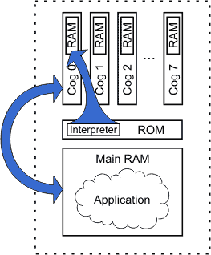

The Propeller has eight identical processors, called cogs. Each cog can be individually set to run or stop at any time as directed by the application it is running. Each cog can be programmed to run independent tasks or cooperative tasks with other cogs, as needed, and this can change as desired during the application’s run time.
You may have realized that we didn't specify which cog(s) to run the last lesson's Output.spin example. So how did it work? We'll discuss it a bit more here.
Upon power-up, the Propeller chip starts the first processor (Cog 0) and loads a Boot Loader program into it. The Boot Loader program is copied from the ROM in the Propeller chip’s Main Memory into the cog's internal RAM memory. Cog 0 then runs the Boot Loader program in its internal memory and the Boot Loader soon determines it should copy user-code from the external EEPROM. So Cog 0 copies the entire 32 K byte EEPROM contents into the Propeller chip’s 32 K byte main RAM memory (separate from the cog’s internal memory). Then the Boot Loader program makes Cog 0 reload itself with the built-in Spin Interpreter; the Boot Loader program in Cog 0 halts at this point while it is being overwritten with the Spin Interpreter program.

Running Output.spin
Notice that the Spin Interpreter, not the Spin Application, is loaded into Cog RAM. The Spin Application resides in Main RAM and is interpreted by the Spin Interpreter program that is running in the cog.
Now, Cog 0 is running the Spin Interpreter, which fetches and executes our application’s code from Main RAM. Since our application consists entirely of interpreted Spin code, it continues to reside only in main memory while a cog running the Spin Interpreter (Cog 0 in this case) reads, interprets and effectively executes it. No other cogs were started during boot up or during our application’s execution; the other seven cogs remain in a dormant state consuming virtually no current at all. Later, we’ll change our application to start other cogs as well.
Propeller Help Version 1.2
Copyright © Parallax Inc., dba Parallax Semiconductor
6/17/2011